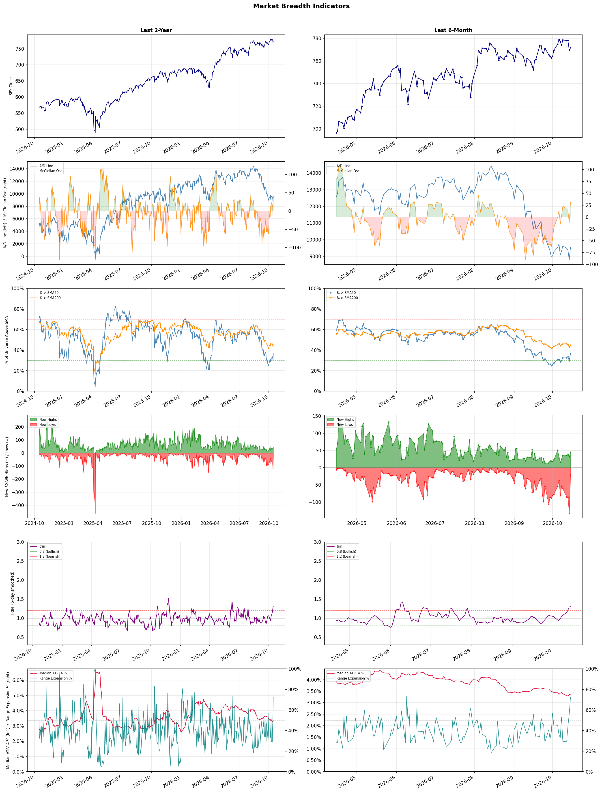

A daily market breadth and sector rotation report for active investors
| Item | Read |
|---|---|
| Regime | Defensive |
| Risk posture | Defensive |
| Universe | 1,315 stocks tracked · 45 new 52-week highs · 30 active swing setups |
| Breadth | only 36.5% of tracked stocks are above SMA50, new highs exceed new lows (45 vs 20) |
| Leadership | Oil & Gas Refining & Marketing, Household & Personal Products, and Discount Stores |
| Weakest groups | Uranium, Electrical Equipment & Parts, and Gambling |
Use this report to prioritize research and chart review; validate entries, stops, liquidity, earnings, and risk before acting.
| Item | Read |
|---|---|
| Primary read | Defensive regime with Defensive risk posture. |
| Research queue | MPC, VLO, DINO, PBF, CSAN |
| Leadership focus | Oil & Gas Refining & Marketing, Household & Personal Products, and Discount Stores |
| Caution list | Uranium, Electrical Equipment & Parts, and Gambling |
| Review prompt | Check extension risk, chart location, fundamentals, valuation, and earnings before using any research row. |
| Item | Read |
|---|---|
| Primary read | 3 active risk warnings; use screen output as watchlist input only. |
| Bullish screens | CHD, PG, DOCU, A, TMO |
| Bearish screens | NN, GDS |
| Alerts / levels | Automated trigger, stop, ATR, liquidity, reward/risk, and event-risk levels are pending future enrichment. |
| Review prompt | Open the linked chart, define trigger and invalidation, then check liquidity and event risk independently. |
Risk Posture: Defensive — screen backdrop favors caution; require independent risk review before new exposure
Metric context: McClellan below -50 = elevated selling pressure; below -100 = washout territory. Range Expansion = share of stocks with daily range above their 20-day average. Signal Density = share of tracked names appearing in signal screens.
| Breadth Date | % > SMA50 | % > SMA200 | New Highs | New Lows | McClellan | Median Range | Avg Range | Median ATR14 | Range Expansion | Signal Density |
|---|---|---|---|---|---|---|---|---|---|---|
| 2026-10-15 | 36.5% | 45.0% | 45 | 20 | 31.4 | 3.8% | 4.6% | 3.4% | 72.5% | 1.8% |

Prior comparison date: October 14, 2026
| Metric | Prior | Current | Change |
|---|---|---|---|
| Regime | Defensive | Defensive | unchanged |
| Risk Posture | Defensive | Defensive | unchanged |
| % > SMA50 | 29.7% | 36.5% | +6.7 pts |
| % > SMA200 | 42.9% | 45.0% | +2.1 pts |
| New Highs | 32 | 45 | +13 |
| New Lows | 133 | 20 | +113 |
Top-10 industries entering: Financial Data & Stock Exchanges and Healthcare Plans. Top-10 industries leaving: Medical Care Facilities and Oil & Gas E&P. New multi-signal long setups: A, AVTR, BLMN, CI, CME, CNK, EBAY, ED, ETSY, EXEL. New multi-signal short setups: none.
| Status | Tickers | Read |
|---|---|---|
| Added | A, AVTR, BLMN, CI, CME, CNK, EBAY, ED | New technical screen matches vs prior report. |
| Removed | ACVA, APLD, BLDR, BP, BRUN, CIFR, CVX, EVRG | No longer present in today's technical screen matches. |
| Still Active | BOX, CBRL, CHD, CNC, DOCU, ECL, GGG, IFF | Appeared in both current and prior reports. |
| Promoted | none | Model Screen Score improved by at least 15 points. |
| Downgraded | none | Model Screen Score declined by at least 15 points. |
| Direction | Industry | ETF | Prior Rank | Current Rank | Days | Rank Change |
|---|---|---|---|---|---|---|
| Rose | Apparel Manufacturing | N/A | 81 | 12 | 35 | +69 |
| Rose | Footwear & Accessories | N/A | 88 | 23 | 42 | +65 |
| Rose | Restaurants | N/A | 78 | 14 | 28 | +64 |
| Rose | Healthcare Plans | IHF | 65 | 10 | 14 | +55 |
| Rose | REIT - Hotel & Motel | XLRE | 58 | 11 | 42 | +47 |
Bull: The Apparel Manufacturing sector is experiencing a rise in relative strength due to favorable industry trends highlighted by recent headlines, such as the shift in trade deals and sourcing strategies from China, which are revitalizing the sector. Additionally, the growing recognition of top-performing apparel stocks, as noted by multiple financial outlets, suggests increasing investor confidence and optimism about future growth prospects, particularly as the industry adapts to changing consumer preferences and supply chain dynamics. This positive momentum is likely to drive further investment and expansion within the sector, positioning it for sustained gains.
Bear: While the apparel manufacturing sector may currently exhibit rising relative strength, this could be misleading as it often reflects short-term market sentiment rather than sustainable growth. The shift in trade deals and sourcing strategies from China may lead to increased costs and supply chain disruptions, particularly for companies reliant on established relationships and economies of scale. Furthermore, the ongoing challenges of inflation, changing consumer spending habits, and potential economic downturns could undermine the optimistic projections highlighted in recent headlines, making it crucial to approach investments in this sector with caution.
Verdict: The apparel manufacturing sector's rise is fundamentally driven by a shift in trade deals and sourcing strategies that are revitalizing the industry, alongside growing investor confidence in top-performing stocks. However, key risks remain, including potential cost increases and supply chain disruptions stemming from these changes, as well as broader economic challenges like inflation and shifting consumer spending habits, which necessitate a cautious approach to investment in this sector.
Sources: Google News
Bull: The Footwear & Accessories industry is experiencing rising relative strength primarily due to robust Q2 earnings results from key players like Under Armour and VF Corp, indicating strong consumer demand in the apparel and accessories sector. Additionally, the recent upgrade for V.F. Corp suggests positive sentiment and confidence in the industry's resilience amid broader apparel sector changes, further bolstered by strategic positioning highlighted in analyses of top shoe stocks for future growth. This combination of strong financial performance and favorable market outlook is driving investor interest and confidence in the sector.
Bear: While the recent Q2 earnings from Under Armour and VF Corp may appear strong, they could be masking deeper issues such as rising production costs, supply chain disruptions, and changing consumer preferences that may not sustain long-term growth. Additionally, the footwear and accessories market is highly competitive, and any short-term gains could be offset by decreasing margins and a potential slowdown in consumer spending as inflationary pressures persist. Thus, the bullish narrative may overlook the fragility of the industry's recovery and the potential for a downturn as economic conditions evolve.
Verdict: The Footwear & Accessories industry is experiencing rising relative strength driven by strong Q2 earnings from key players like Under Armour and VF Corp, which reflect robust consumer demand and positive market sentiment. However, the key risk lies in potential long-term challenges such as rising production costs, supply chain disruptions, and inflationary pressures that could dampen consumer spending and erode margins, necessitating cautious monitoring of economic conditions and competitive dynamics. Investors should consider these factors when evaluating their positions in the sector.
Sources: Google News
Bull: The rising relative strength of the restaurant industry can be attributed to a combination of robust consumer demand and strategic innovations within leading companies, as highlighted by the positive sentiment around top restaurant stocks like Chipotle and McDonald's, despite short-term dips. Additionally, the mention of "Top Tokenized Restaurants Stocks" suggests a growing interest in integrating technology and digital assets within the sector, which could enhance operational efficiencies and attract a tech-savvy customer base. This evolving landscape, coupled with the anticipation of growth in restaurant ETFs for 2026, indicates strong investor confidence in the industry's long-term prospects.
Bear: While the rising relative strength of the restaurant industry may seem promising, it is crucial to consider the potential headwinds that could undermine this optimism. Economic pressures such as inflation and rising labor costs are squeezing margins, leading to increased prices that could deter consumer spending. Additionally, the short-term dips in stocks like Chipotle, McDonald's, and Starbucks may signal a broader market correction or consumer fatigue, suggesting that the positive sentiment may not be sustainable in the face of these challenges.
Verdict: The restaurant industry's rising strength is fundamentally driven by robust consumer demand and strategic innovations, particularly in technology integration, which enhance operational efficiencies and attract a tech-savvy clientele. However, key risks include economic pressures like inflation and rising labor costs that could squeeze margins and deter consumer spending, potentially undermining the industry's growth trajectory. Investors should monitor these economic indicators closely while considering opportunities in leading restaurant stocks and ETFs.
Sources: Google News
Bull: The rising relative strength of Healthcare Plans can be attributed to the sector's defensive nature and ongoing innovation, as highlighted in the Morningstar article, which positions healthcare stocks favorably amid economic uncertainty. Additionally, the positive sentiment reflected in multiple headlines, such as "6 Best Health Insurance Stocks for 2026" and "10 Best Healthcare Stocks to Buy for 2026," underscores investor confidence in the long-term growth potential and profitability of healthcare companies, particularly as they adapt to evolving market demands and regulatory changes.
Bear: While the rising relative strength of Healthcare Plans may suggest a defensive appeal, it is essential to recognize that this sector is facing significant headwinds, including increasing regulatory scrutiny, rising operational costs, and potential changes in reimbursement models that could pressure margins. Furthermore, the optimistic sentiment reflected in recent headlines may be overly bullish, as past performance does not guarantee future results, especially in a rapidly evolving healthcare landscape where innovation could also lead to increased competition and market volatility.
Verdict: The rising relative strength of Healthcare Plans is primarily driven by their defensive characteristics, positioning them favorably during economic uncertainty, alongside ongoing innovations that enhance their service offerings. However, investors should remain cautious of significant risks, including increasing regulatory scrutiny and potential shifts in reimbursement models that could pressure profit margins and create volatility in the sector.
Sources: Google News
Bull: The REIT - Hotel & Motel sector is experiencing rising relative strength primarily due to a robust recovery in travel demand and increased occupancy rates, as highlighted in recent headlines discussing strong performance from major players like Host Hotels & Resorts. Additionally, articles from The Motley Fool and Morningstar emphasize the potential for sustained growth in hospitality REITs, driven by favorable economic conditions and a rebound in leisure and business travel, which are likely to enhance revenue and profitability for these companies moving forward.
Bear: While the bull case highlights a recovery in travel demand and rising occupancy rates, it overlooks the potential for economic headwinds such as inflation, rising interest rates, and geopolitical uncertainties that could dampen consumer spending on travel and leisure. Furthermore, the hospitality sector remains vulnerable to shifts in travel behavior, including the possibility of a permanent increase in remote work, which may reduce demand for hotel accommodations in the long term. As a result, the optimism surrounding hospitality REITs may be overly optimistic, failing to account for these significant risks.
Verdict: The REIT - Hotel & Motel sector is likely experiencing a rise in relative strength due to a robust recovery in travel demand and improved occupancy rates, fueled by favorable economic conditions and a resurgence in both leisure and business travel. However, investors should remain cautious of key risks such as inflation, rising interest rates, and potential shifts in travel behavior due to increased remote work, which could negatively impact long-term demand for hotel accommodations. It is advisable to monitor these economic indicators closely when considering investments in this sector.
Sources: Google News
| Direction | Industry | ETF | Prior Rank | Current Rank | Days | Rank Change |
|---|---|---|---|---|---|---|
| Fell | Agricultural Inputs | N/A | 5 | 75 | 35 | -70 |
| Fell | Uranium | URA | 23 | 87 | 42 | -64 |
| Fell | Computer Hardware | XLK | 4 | 62 | 14 | -58 |
| Fell | Capital Markets | KCE | 12 | 66 | 35 | -54 |
| Fell | Gold | GDX | 4 | 57 | 42 | -53 |
Bear: While the bull analyst points to potential long-term prospects for specific agricultural stocks, the current environment of rising fertilizer and energy costs, coupled with ongoing supply chain disruptions, poses significant near-term headwinds that could severely impact profitability and margins in the Agricultural Inputs sector. Furthermore, the broader economic context indicates that the materials sector's rise is not translating into strength for agricultural inputs, suggesting that these stocks may remain under pressure as investors seek more robust growth opportunities in other sectors, potentially leading to further declines in relative strength.
Bull: The Agricultural Inputs sector is experiencing a decline in relative strength primarily due to supply chain disruptions and volatility in fertilizer and energy prices, as highlighted in the Webull article regarding exposure to supply shocks. Additionally, the broader economic context, where the materials sector is rising but underperforming, suggests that while there are opportunities, the sector is currently overshadowed by more robust growth in other industries, leading to a relative weakness in agricultural inputs. However, as indicated by the Motley Fool and Univest, there are promising long-term prospects for specific agricultural stocks, which could signal a potential turnaround as market conditions stabilize.
Verdict: The Agricultural Inputs sector is currently facing significant challenges due to ongoing supply chain disruptions and rising costs for fertilizers and energy, which are squeezing profitability and margins. While there are long-term growth prospects for specific agricultural stocks as market conditions stabilize, the key risk remains that persistent inflationary pressures and volatility could hinder recovery and keep these stocks underperforming in the near term. Investors should closely monitor developments in supply chains and commodity prices to gauge the timing of any potential turnaround in this sector.
Sources: Google News
Bear: While the bull analyst attributes the recent sector decline to a correction highlighting the disparity between producers and developers, this may also signal a broader loss of confidence in the uranium market as a whole, especially given the ongoing volatility in energy prices and geopolitical uncertainties. Furthermore, the rise of NuScale Power, despite dilution, could indicate a shift away from traditional uranium investments toward alternative nuclear technologies, suggesting that investor sentiment may be moving away from uranium stocks rather than merely reassessing them. This trend could further exacerbate the challenges faced by the uranium sector, particularly for companies that are not yet profitable.
Bull: The recent decline in the relative strength of the uranium sector can be attributed to a sector correction that has highlighted the disparity between profitable uranium producers and loss-making developers, as noted in the ChartMill headline. This differentiation may be causing investor caution, particularly as the market reassesses the viability of various companies within the industry. Additionally, the rise of NuScale Power shares, despite dilution, suggests a shift in investor focus towards innovative nuclear technologies, potentially diverting attention from traditional uranium investments.
Verdict: The uranium industry's recent decline is primarily driven by a sector correction that distinguishes between profitable producers and struggling developers, prompting investor caution. However, a key risk lies in the potential loss of confidence in the uranium market as a whole, fueled by volatile energy prices and a shift towards alternative nuclear technologies like those offered by NuScale Power. Investors should closely monitor these trends and consider reallocating investments to companies with strong fundamentals or innovative technologies to mitigate risks.
Sources: Google News
Bear: While the bull analyst attributes the decline in the Computer Hardware sector to broader market pressures and a shift towards emerging technologies, this perspective overlooks the fundamental challenges facing the industry, including supply chain disruptions, rising production costs, and intensifying competition from both established players and new entrants. Additionally, the drop in stocks like Super Micro Computer signals a lack of investor confidence in traditional hardware companies, suggesting that the sector may be facing deeper structural issues rather than merely reacting to market trends or investor sentiment. As the focus shifts towards innovative technologies, traditional hardware firms could struggle to adapt, leading to further declines in their market positions and valuations.
Bull: The recent decline in the relative strength of the Computer Hardware sector can be attributed to broader market pressures, as evidenced by the significant drop in the Shanghai Composite Index and the sector-wide selling that affected companies like Super Micro Computer. Additionally, the headlines indicate a shift in investor focus towards emerging technologies, such as quantum computing and AI, which may be diverting capital away from traditional hardware stocks, leading to a perception of weakness in the sector amidst a competitive and rapidly evolving tech landscape.
Verdict: The decline in the Computer Hardware sector is primarily driven by fundamental challenges such as supply chain disruptions, rising production costs, and increased competition, which are exacerbated by a market shift towards emerging technologies like AI and quantum computing. The key risk from the bear case is that traditional hardware companies may struggle to innovate and adapt, potentially leading to further declines in their market positions and valuations. Investors should closely monitor these structural issues and consider reallocating capital towards more resilient sectors or companies with strong innovation pipelines.
Sources: Google News
Bear: While the bull analyst highlights potential recovery opportunities, the persistent decline in relative strength for the Capital Markets industry signals deeper structural issues that may not be easily resolved by market stabilization. The emphasis on tokenization and innovative financial technologies indicates a significant shift in investor preference away from traditional capital market players, which could further erode their market share and profitability. Additionally, the "midterm mindset" suggests that uncertainty will likely persist, creating an environment where capital markets may struggle to regain momentum amidst ongoing economic headwinds and competitive pressures.
Bull: The Capital Markets industry is experiencing a decline in relative strength primarily due to broader economic uncertainties and shifting investor sentiment, as highlighted by headlines discussing "industry headwinds" and the "midterm mindset" affecting market dynamics. Additionally, the focus on tokenization and diversification in capital markets, as noted in the CoinGecko article, suggests that traditional capital market players may be losing ground to innovative financial technologies, further contributing to the sector's relative weakness. However, the J.P. Morgan report indicating sectors primed for growth suggests that there are still opportunities for recovery and investment within Capital Markets, particularly as the market stabilizes post-midterm elections.
Verdict: The Capital Markets industry is likely experiencing a decline due to a combination of economic uncertainties and a shift in investor preferences towards innovative financial technologies, including tokenization, which threatens the traditional players' market share. The key risk from the bear case is that these structural challenges may prove more persistent than anticipated, hindering any potential recovery and leaving capital markets vulnerable to ongoing competitive pressures and economic headwinds. Investors should closely monitor these trends and consider diversifying their portfolios to mitigate risks associated with traditional capital market investments.
Sources: Google News
Bear: While the bull analyst highlights the resilience of gold miners in Q3, this performance may be misleading as it occurs within a broader context of declining relative strength and rising cost pressures that threaten profitability. The anticipated challenges in 2027, coupled with a prolonged correction phase and macroeconomic uncertainties, suggest that the sector may be facing a more significant downturn ahead, undermining the notion of lasting strength in gold mining stocks. Furthermore, the outperformance against the S&P 500 could simply reflect sector rotation rather than a robust demand for gold, which may not sustain investor interest in the face of rising costs and geopolitical risks.
Bull: The recent decline in gold's relative strength can be attributed to rising cost pressures within the gold mining sector, as highlighted by UBS's report on top gold mining stocks facing challenges in 2027. Additionally, the ongoing correction phase, as noted in multiple headlines, suggests that the market is adjusting to macroeconomic signals, including fluctuations in the gold/oil ratio, which can impact investor sentiment and demand for gold. Despite these challenges, it's worth noting that gold miners outperformed every S&P 500 sector in Q3, indicating resilience amidst the broader market volatility.
Verdict: The gold industry is experiencing a decline primarily due to rising cost pressures in the mining sector and macroeconomic uncertainties that are dampening investor sentiment. While gold miners showed resilience by outperforming the S&P 500 in Q3, this may not indicate sustained strength, as the bear case highlights significant risks from anticipated challenges in 2027 and potential sector rotation away from gold amidst geopolitical tensions. Investors should closely monitor cost trends and macroeconomic signals to assess the viability of gold investments moving forward.
Sources: Google News
| Industry | Rank | ETF | 7d | 14d | 28d | 42d | Chg 42d | Size | 20D | 60D | Composite | Active Setups |
|---|---|---|---|---|---|---|---|---|---|---|---|---|
| Oil & Gas Refining & Marketing | 1 | CRAK | 1 | 1 | 1 | 1 | 0 | 7 | 8.0% | 33.8% | 0.979 | 0 |
| Household & Personal Products | 2 | XLP | 9 | 26 | 31 | 22 | +20 | 12 | 10.7% | 12.5% | 0.905 | 1 |
| Discount Stores | 3 | XRT | 5 | 16 | 25 | 39 | +36 | 7 | 10.0% | 14.0% | 0.893 | 1 |
| Oil & Gas Integrated | 4 | XLE | 6 | 9 | 5 | 7 | +3 | 10 | 4.9% | 14.4% | 0.890 | 0 |
| Apparel Retail | 5 | XRT | 8 | 10 | 26 | 34 | +29 | 8 | 11.6% | 10.3% | 0.881 | 0 |
| Health Information Services | 6 | N/A | 2 | 5 | 4 | 3 | -3 | 12 | 3.8% | 41.1% | 0.871 | 1 |
| Software - Application | 7 | IGV | 7 | 14 | 17 | 9 | +2 | 74 | 5.4% | 24.0% | 0.836 | 0 |
| Financial Data & Stock Exchanges | 8 | N/A | 28 | 29 | 23 | 8 | 0 | 7 | 5.7% | 7.1% | 0.831 | 1 |
| Diagnostics & Research | 9 | N/A | 3 | 2 | 2 | 2 | -7 | 16 | -1.4% | 28.8% | 0.796 | 0 |
| Healthcare Plans | 10 | IHF | 40 | 65 | 28 | 35 | +25 | 10 | 4.3% | -4.7% | 0.796 | 1 |
Rank columns (7d–42d) show the industry's rank that many trading days ago — lower is stronger. Chg 42d = rank change vs 42 trading days ago — positive means the industry moved up. 20D and 60D are the mean stock return within the industry over that period. Active Setups: count of today's swing-trade candidates from this industry appearing across all signal screens.
| Industry | Rank | ETF | 7d | 14d | 28d | 42d | Chg 42d | Size | 20D | 60D | Composite | Active Setups |
|---|---|---|---|---|---|---|---|---|---|---|---|---|
| Uranium | 87 | URA | 87 | 82 | 82 | 23 | -64 | 6 | -18.7% | -19.6% | 0.023 | 0 |
| Electrical Equipment & Parts | 86 | XLI | 72 | 46 | 57 | 86 | 0 | 12 | -18.9% | -28.0% | 0.041 | 0 |
| Gambling | 85 | N/A | 84 | 84 | 70 | 38 | -47 | 5 | -15.0% | -21.1% | 0.055 | 0 |
| REIT - Mortgage | 84 | N/A | 86 | 85 | 68 | 43 | -41 | 11 | -13.9% | -20.0% | 0.059 | 0 |
| Other Industrial Metals & Mining | 83 | N/A | 82 | 76 | 62 | 41 | -42 | 21 | -17.4% | -16.9% | 0.075 | 0 |
| Aerospace & Defense | 82 | ITA | 80 | 64 | 77 | 85 | +3 | 26 | -15.0% | -15.8% | 0.081 | 0 |
| Utilities - Renewable | 81 | N/A | 78 | 60 | 80 | 78 | -3 | 6 | -15.3% | -24.3% | 0.084 | 0 |
| Resorts & Casinos | 80 | N/A | 85 | 87 | 81 | 81 | +1 | 6 | -9.7% | -19.8% | 0.088 | 0 |
| Solar | 79 | TAN | 81 | 80 | 86 | 87 | +8 | 8 | -9.4% | -27.2% | 0.118 | 0 |
| Chemicals | 78 | N/A | 83 | 86 | 87 | 84 | +6 | 8 | -8.5% | -26.8% | 0.129 | 0 |
Rank columns (7d–42d) show the industry's rank that many trading days ago — lower is stronger. Chg 42d = rank change vs 42 trading days ago — positive means the industry moved up. 20D and 60D are the mean stock return within the industry over that period. Active Setups: count of today's swing-trade candidates from this industry appearing across all signal screens.
These are research candidates from top-ranked stocks, capped at five names per industry to avoid over-concentration. Returns shown (60D, 120D, 250D) are historical — they reflect where prices have already moved, not forward expectations. Extension Risk flags names that may require extra patience or a better entry point. They are not buy signals.
Chart: TV = TradingView chart (opens in browser); PDF = local chart file (if downloaded).
| Ticker | Name | Industry | Industry Rank | Market Cap | 60D Hist | 120D Hist | 250D Hist | Extension Risk | Research Reason | Chart |
|---|---|---|---|---|---|---|---|---|---|---|
| MPC | Marathon Petroleum | Oil & Gas Refining & Marketing | 1 | N/A | 51.4% | 114.2% | 167.7% | Extended | Top-ranked in industry; extended | TV |
| VLO | Valero Energy | Oil & Gas Refining & Marketing | 1 | N/A | 43.4% | 89.9% | 190.0% | Constructive | Top-ranked in industry | TV |
| DINO | HF Sinclair | Oil & Gas Refining & Marketing | 1 | N/A | 38.1% | 109.7% | 154.3% | Extended | Top-ranked in industry; extended | TV |
| PBF | PBF Energy | Oil & Gas Refining & Marketing | 1 | N/A | 35.7% | 115.8% | 213.7% | Extended | Top-ranked in industry; extended | TV |
| CSAN | Cosan | Oil & Gas Refining & Marketing | 1 | N/A | 9.5% | 9.5% | 9.5% | Constructive | Top-ranked in industry | TV |
| ELF | e.l.f. Beauty | Household & Personal Products | 2 | N/A | 46.9% | 75.2% | -14.5% | Constructive | Top-ranked in industry | TV |
| ODD | ODDITY Tech | Household & Personal Products | 2 | N/A | 41.5% | 44.3% | -53.6% | Constructive | Top-ranked in industry | TV |
| EL | Estee Lauder | Household & Personal Products | 2 | N/A | 30.2% | 38.7% | 12.3% | Constructive | Top-ranked in industry | TV |
| COTY | Coty Inc | Household & Personal Products | 2 | N/A | 16.8% | 31.8% | -23.1% | Constructive | Top-ranked in industry | TV |
| CHD | Church & Dwight | Household & Personal Products | 2 | N/A | 6.4% | 9.2% | 19.7% | Constructive | Top-ranked in industry | TV |
| OLLI | Ollie's Bargain Outlet | Discount Stores | 3 | N/A | 43.8% | 5.9% | -22.4% | Constructive | Top-ranked in industry | TV |
| BJ | BJ's Wholesale Club Holdings | Discount Stores | 3 | N/A | 12.4% | 9.5% | 11.0% | Constructive | Top-ranked in industry | TV |
| WMT | Walmart | Discount Stores | 3 | N/A | 8.1% | -8.9% | 11.6% | Constructive | Top-ranked in industry | TV |
| COST | Costco | Discount Stores | 3 | N/A | 5.6% | -3.0% | 6.3% | Constructive | Top-ranked in industry | TV |
| DLTR | Dollar Tree | Discount Stores | 3 | N/A | 1.9% | 19.9% | 32.3% | Constructive | Top-ranked in industry | TV |
| PBR | Petroleo Brasileiro SA Petrobras | Oil & Gas Integrated | 4 | N/A | 37.9% | 25.7% | 128.3% | Constructive | Top-ranked in industry | TV |
| SHEL | Shell | Oil & Gas Integrated | 4 | N/A | 19.0% | 18.3% | 50.5% | Constructive | Top-ranked in industry | TV |
| SU | Suncor Energy | Oil & Gas Integrated | 4 | N/A | 17.6% | 19.7% | 100.2% | Constructive | Top-ranked in industry | TV |
| XOM | Exxon Mobil | Oil & Gas Integrated | 4 | N/A | 13.8% | 18.9% | 62.5% | Constructive | Top-ranked in industry | TV |
| BP | BP PLC | Oil & Gas Integrated | 4 | N/A | 13.2% | 7.2% | 55.4% | Constructive | Top-ranked in industry | TV |
These are technical screen matches from existing signal files. They are not trade recommendations. Trigger, stop, ATR, liquidity, reward/risk, and event risk still require separate validation until those inputs are available.
Model Screen Score is weighted by signal count, industry rank, freshness, and setup type. It is not a probability of profit, expected return, or suitability rating. Industry cap: max 3 candidates per industry.
Signal glossary: Momentum Pullback = stock in an uptrend that has pulled back 10–30% and shows re-entry conditions. MA Compression = short- and long-term moving averages converging, often preceding a directional move. Three-Day Up/Down = three consecutive closes in the same direction. New 52Wk High/Low = price reached a new annual extreme.
Chart: TV = TradingView chart (opens in browser); PDF = local chart file (if downloaded).
| Ticker | Industry | Setups | Close | Industry Rank | Signal Count | Model Screen Score | Reason | Chart |
|---|---|---|---|---|---|---|---|---|
| CHD | Household & Personal Products | MA Compression; Three-Day Up | 103.08 | 2 | 2 | 95 | Multi-signal; top industry setup | TV |
| PG | Household & Personal Products | MA Compression; Three-Day Up | 157.08 | 2 | 2 | 95 | Multi-signal; top industry setup | TV |
| DOCU | Software - Application | New 52Wk High; Three-Day Up | 77.52 | 7 | 2 | 93 | Multi-signal; top industry breakout | TV |
| A | Diagnostics & Research | New 52Wk High; Three-Day Up | 175.55 | 9 | 2 | 85 | Multi-signal; top industry breakout | TV |
| TMO | Diagnostics & Research | New 52Wk High; Three-Day Up | 696.49 | 9 | 2 | 85 | Multi-signal; top industry breakout | TV |
| CNC | Healthcare Plans | New 52Wk High; Three-Day Up | 70.51 | 10 | 2 | 85 | Multi-signal; top industry breakout | TV |
| AVTR | Medical Instruments & Supplies | New 52Wk High; Three-Day Up | 16.09 | 13 | 2 | 85 | Multi-signal; new-high strength | TV |
| BLMN | Restaurants | Momentum Pullback; Three-Day Up | 9.93 | 14 | 2 | 85 | Multi-signal; pullback setup | TV |
| CBRL | Restaurants | New 52Wk High; Three-Day Up | 67.41 | 14 | 2 | 85 | Multi-signal; new-high strength | TV |
| CME | Financial Data & Stock Exchanges | MA Compression; Three-Day Up | 289.46 | 8 | 2 | 80 | Multi-signal; top industry setup | TV |
| CI | Healthcare Plans | MA Compression; Three-Day Up | 298.81 | 10 | 2 | 80 | Multi-signal; top industry setup | TV |
| BOX | Software - Infrastructure | New 52Wk High; Three-Day Up | 39.48 | 17 | 2 | 77 | Multi-signal; new-high strength | TV |
| PFE | Drug Manufacturers - General | New 52Wk High; Three-Day Up | 29.44 | 21 | 2 | 77 | Multi-signal; new-high strength | TV |
| EBAY | Internet Retail | New 52Wk High; Three-Day Up | 122.91 | 24 | 2 | 77 | Multi-signal; new-high strength | TV |
| ETSY | Internet Retail | New 52Wk High; Three-Day Up | 89.18 | 24 | 2 | 77 | Multi-signal; new-high strength | TV |
| CNK | Entertainment | New 52Wk High; Three-Day Up | 38.52 | 25 | 2 | 77 | Multi-signal; new-high strength | TV |
| MRSH | Insurance Brokers | MA Compression; Three-Day Up | 186.54 | 19 | 2 | 72 | Multi-signal; compression setup | TV |
| KDP | Beverages - Non-Alcoholic | New 52Wk High; Three-Day Up | 34.18 | 26 | 2 | 70 | Multi-signal; new-high strength | TV |
| KO | Beverages - Non-Alcoholic | New 52Wk High; Three-Day Up | 92.00 | 26 | 2 | 70 | Multi-signal; new-high strength | TV |
| IFF | Specialty Chemicals | New 52Wk High; Three-Day Up | 90.29 | 37 | 2 | 70 | Multi-signal; new-high strength | TV |
| HLN | Drug Manufacturers - Specialty & Generic | MA Compression; Three-Day Up | 9.94 | 28 | 2 | 65 | Multi-signal; compression setup | TV |
| ECL | Specialty Chemicals | MA Compression; Three-Day Up | 290.81 | 37 | 2 | 65 | Multi-signal; compression setup | TV |
| EXEL | Biotechnology | New 52Wk High; Three-Day Up | 62.83 | 53 | 2 | 65 | Multi-signal; new-high strength | TV |
| HALO | Biotechnology | New 52Wk High; Three-Day Up | 121.51 | 53 | 2 | 65 | Multi-signal; new-high strength | TV |
| MRNA | Biotechnology | New 52Wk High; Three-Day Up | 236.50 | 53 | 2 | 65 | Multi-signal; new-high strength | TV |
| ED | Utilities - Regulated Electric | MA Compression; Three-Day Up | 109.86 | 42 | 2 | 60 | Multi-signal; compression setup | TV |
| GGG | Specialty Industrial Machinery | MA Compression; Three-Day Up | 81.78 | 70 | 2 | 50 | Multi-signal; compression setup | TV |
| HRB | Personal Services | Momentum Pullback; Three-Day Up | 48.31 | N/A | 2 | 45 | Multi-signal; pullback setup | TV |
Bearish setups — stocks making new lows or showing persistent downside patterns. Validate carefully before acting.
| Ticker | Industry | Setups | Close | Industry Rank | Signal Count | Model Screen Score | Reason | Chart |
|---|---|---|---|---|---|---|---|---|
| NN | Software - Infrastructure | New 52Wk Low; Three-Day Down | 10.71 | 17 | 2 | 47 | Multi-signal; new-low weakness | TV |
| GDS | Information Technology Services | New 52Wk Low; Three-Day Down | 25.32 | 35 | 2 | 40 | Multi-signal; new-low weakness | TV |
How To Use This Report
| Use | Purpose |
|---|---|
| Market map | Start with breadth, regime, risk warnings, and what changed since the prior report. |
| Industry scan | Use leading, deteriorating, rising, and declining industries to focus research. |
| Research queue | Treat long-term candidates as names for deeper fundamental, valuation, and chart review. |
| Technical review | Treat bullish and bearish screen matches as watchlist inputs that require independent trigger, stop, liquidity, and event-risk checks. |
| Source follow-up | Use chart links and source files to verify raw inputs before relying on any row. |
What This Report Is Not
| Not | Meaning |
|---|---|
| Investment advice | The report does not evaluate personal objectives, risk tolerance, tax situation, account type, or suitability. |
| Buy/sell recommendation | Named tickers are research candidates or screen matches, not recommendations to transact. |
| Price target | The report does not provide fair value estimates, targets, or expected returns. |
| Trade plan | Trigger, stop, sizing, reward/risk, liquidity, and event-risk review remain separate user work. |
| Performance claim | Model Screen Score is not validated historical performance or a forecast of future results. |
| Item | Note |
|---|---|
| Version | Daily Report Methodology v1 |
| Model Screen Score | Screen-fit rank based on signal count, industry rank, freshness, and setup type. |
| Not predictive proof | The score is not expected return, probability of profit, historical validation, or suitability analysis. |
| Industry ranks | Composite industry ranks use existing daily ranking outputs and historical rank columns when available. |
| Research candidates | Long-term rows are research candidates from ranked stocks and leading industries, with historical returns labeled as historical only. |
| Technical matches | Bullish and bearish rows are screen matches requiring independent chart, trigger, stop, liquidity, and event-risk review. |
| Source | Status | Rows | Path |
|---|---|---|---|
| Market breadth | present | 1254 | breadth_20261015.csv |
| Industry composite rankings | present | 87 | all_industry_composite_20261015.csv |
| Top ranked stocks | present | 163 | top_ranked_composite_20261015.csv |
| All ranked stocks | present | 1315 | all_stocks_composite_sorted_20261015.csv |
| Top momentum pullbacks | present | 1468 | top_momentum_pullbacks_20261015.csv |
| MA compression | present | 1468 | ma_compression_stocks_20261015.csv |
| Three-day up/down | present | 163 | three_day_up_down_stocks_20261015.csv |
| New 52-week members | present | 65 | breadth_new_52wk_members_20261015.csv |
This report is generated from automated technical screens and is for informational and research purposes only. It is not investment advice, a solicitation, or a recommendation to buy or sell any security. Past performance is not indicative of future results. You are solely responsible for your own investment decisions. Consult a licensed financial advisor before acting on any information herein.